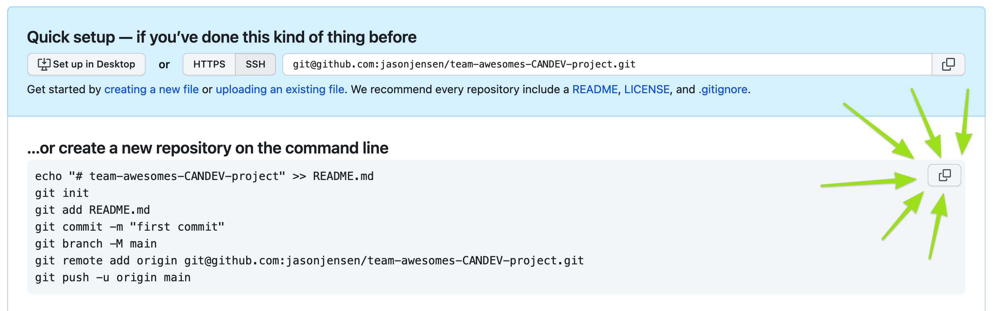

Introduction to Git and Github
CANDEV 2022
Git vs Github
- Git is a version control system
- GitHub is an internet service used to centrally store git repositories
Why use Git?
Controlling versions can be difficult

With Git, one can
- Track all changes made to a code base, with context
- Revert changes at any time
- Work on multiple copies of the code without endless folders
- Have multiple people work on the same code without breaking things
- More...
Git concepts
Modifying and committing code
All code lines exist in one of three states.
- Modified: Code that has been changed and now differes from the latest committed copy, but is not yet staged.
- Staged: Modified code must be added to the staging area to be committed. Only staged code gets committed.
- Committed: Changes that are now committed to the code history. Usually alongside a commit message.
Modifying and committing code
Modified code stays in your local copy unless staged and committed.

Branching and merging
- All git repositories contain one or more branches.
- Branches are independent copies of the same code base.
- Branches share the same history prior to the branch point.
- Branches will diverge over time unless merged.
Branching and merging
Using github for your Candev submission
Step 1: create a GitHub account
Step 2: set up SSH
- Create a local SSH key and add it to your agent
- Add the key to your GitHub account
Step 3: Make a new github repo
Step 3: Make a new github repo
Step 3: Make a new github repo
Step 4: Setup your local git credentials
Open Git BASH (Windows) or terminal (mac/linux) and add your name and email:
git config --global user.name "Jason Jensen"
git config --global user.email jason.jensen@statcan.gc.ca
Note: email should match GitHub email.
Step 5: Copy the suggested code from your new repo
Step 6: Do the initial commit
- Open Git BASH (windows) or terminal (mac/linux)
- Make a new folder:
- Change directory to the new folder:
- Paste and execute the code copied from github.
mkdir team-awesomes-CANDEV-projectcd team-awesomes-CANDEV-projectErrors may result if SSH was not configured correctly.
Step 7: Do the coding project

Step 8: Copy your solution to the repository folder
Step 9: Add files to the staging area
Using Git BASH (windows) or terminal (mac/linux) in the repository folder:
- List modified files:
git statusgit add .Note: files can also be added one at a time.
Note: use a .gitignore file to exclude groups of files/folders.
Step 10: Commit staged files
- Confirm staged files:
git statusgit commit -m "add submission files"git push origin mainStep 11: Include repo URL in CANDEV submission form
More details on the commit flow
Setup
Situation: repo is set up with a README.md file.
- Add a line to the README.md file.
- Make a file named "dont_commit_this.py".
Checking the status
- See which files have changed:
git statusChecking the diff
- Investigate what has changed:
git diff README.mdCommitting only some files
- Commit the changed readme:
git add README.md
git statusCommitting and pushing staged changes
- Commit the changes
git commit -m "change readme"git push origin mainIgnoring files
Ignoring files
- The untracked file is still showing up:
git statusIgnoring files
- This can be fixed with a .gitignore file
- The gitignore file takes various gulp-like patterns:
Note: no characters before the filetype extension (before the period)
Ignoring files
- Check the status:
git statusExample .gitignore files: https://github.com/github/gitignore
Back matter
Topics not covered
- Branching and merging
- Merging conflicts
- GUI tools (Git GUI, VS Code, GitKraken, others)
- Git hooks (automation)
- GitHub/GitLab features (Issue reporting, github pages, CI/CD pipelines, etc.)
- Probably other things too...
Other sources and inspirations
Jacob Fiksel: Introduction to Git and GitHub
Munira Omar: An Intro to Git and GitHub for Beginners Part I (Tutorial)